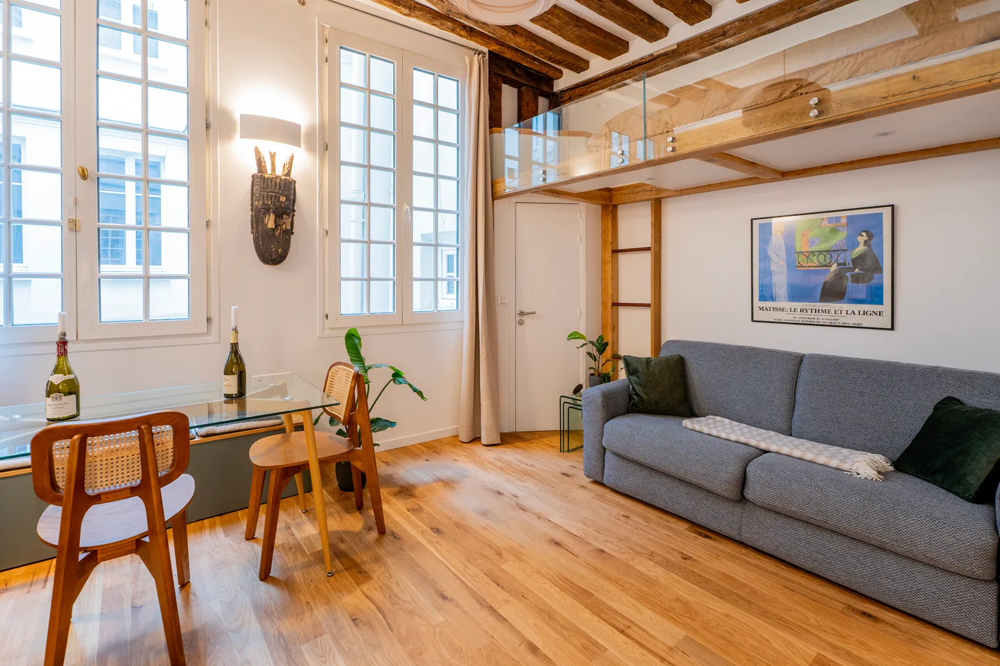

Stouls Studio / Portfolio / Studio Mazarine, Paris 6th
Studio Mazarine, Paris 6th
A 24 m² studio rebuilt to hold a real kitchen, a table to eat at, a living room and a sleeping area set apart from all three.
- Type
- Rental investment
- Location
- Paris, 6th arrondissement
- Surface
- About 24 m² (258 sq ft)
- Work by the studio
- Full renovation for a rental investment
The studio was renovated entirely for a rental investment. What it already had was kept and shown: the stone, the old beams, the tall windows and the height under the ceiling.
That height is what makes the plan work. The bed went up onto a mezzanine behind a glass balustrade, so the sleeping area is separate from the living space without a wall. The stair that reaches it is a piece of joinery in its own right, with the television and the storage built into its steps.
Below, the kitchen is generous for a studio, with room to cook properly, and a glass table by the windows is there for dinner. Functions and circulation were arranged to make the room feel larger than its floor area.




A project like this one
If this is close to what you have in mind for Paris, tell Margaux. A link to this page and two lines about your budget and timing are enough to start.
Previous: Apartment, Paris 9thNext: Top-floor studio, Saint-Germain-des-Prés